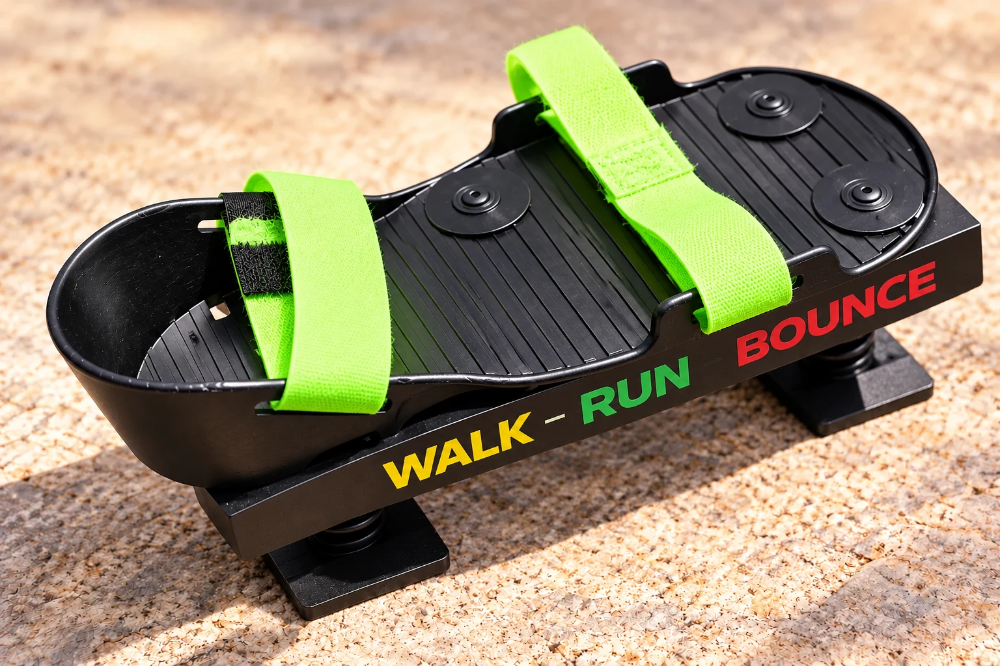
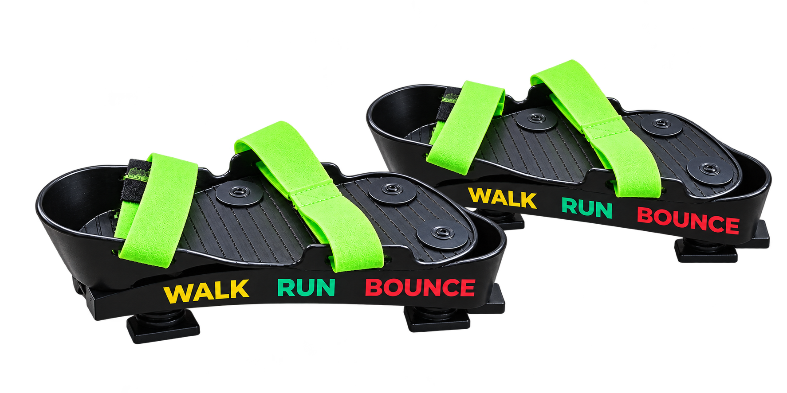
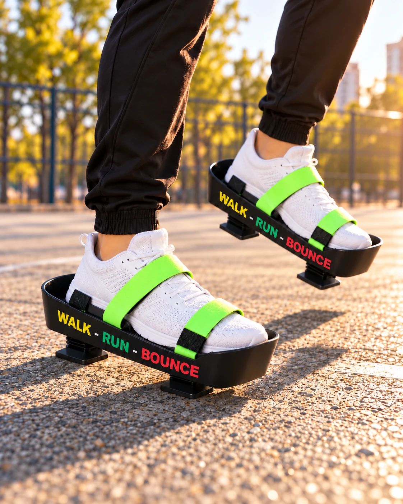
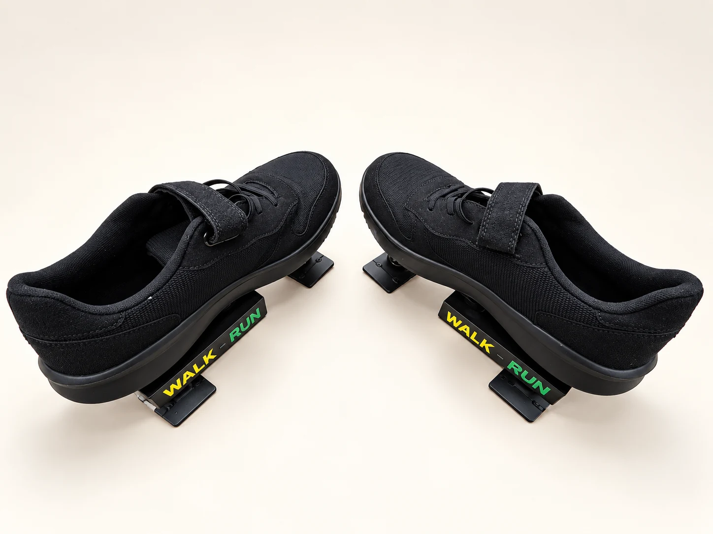
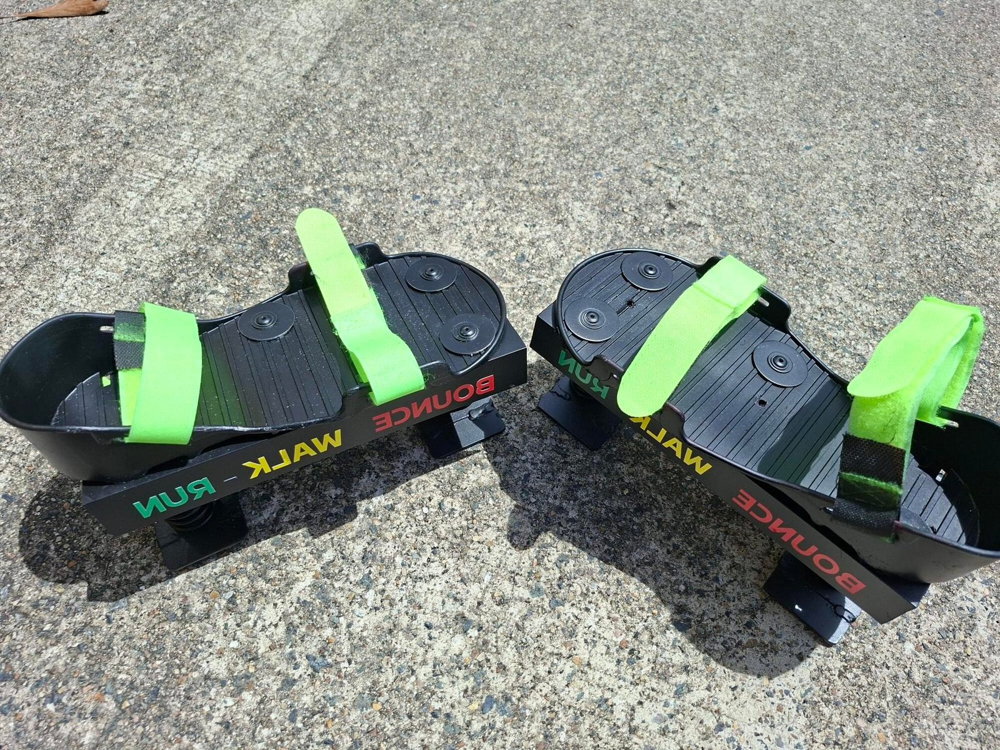
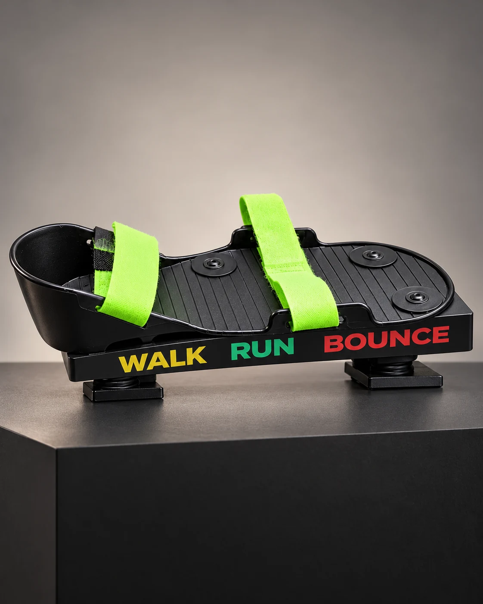
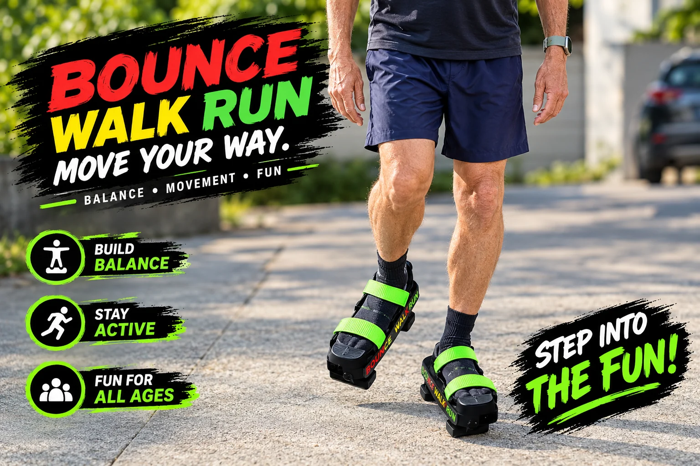
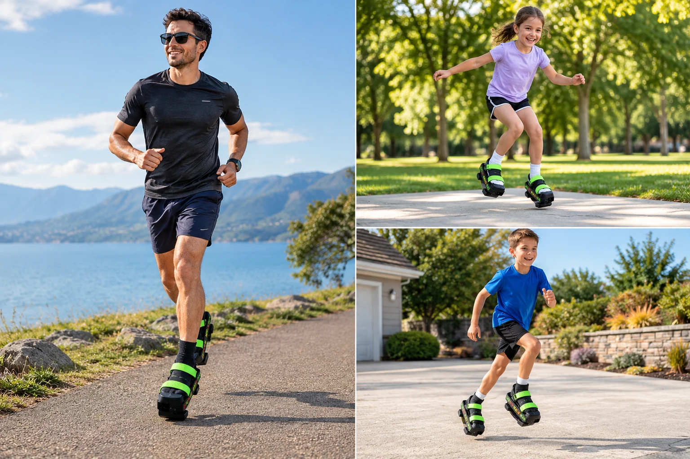

01INTRODUCING SPRUNG-GO BOUNCE SHOES
BOUNCE
Bounce-style attachments turn everyday play into a bouncing adventure. Designed for fun, movement and active play, they’re a gift idea for kids who love trying something new.
A new shoe attachment designed to bring cushioned movement and vertical bounce to everyday play.

A DIFFERENT FEEL UNDERFOOT
Introducing Sprung-Go, an innovative shoe attachment designed for children aged 7–18, combining cushioned movement, vertical bounce and stability in one design. It is engineered to support natural heel-to-toe walking, with a compact footprint designed to fit within the outline of a standard shoe.
We’re developing a new generation of lightweight, cushioned movement platforms and seeking manufacturing and distribution partners to bring Sprung-Go to markets worldwide.
Sprung-Go sits within a standard shoe footprint, so the attachments are designed not to interfere with each other when moving.
Let’s bring the next generation of movement to life.
See where we're headed
A compact footprint, a cushioned step and a whole new way to play.
REAL PERFORMANCE. REAL POTENTIAL. GLOBAL OPPORTUNITIES.
Watch the original Sprung-Go prototype footage from the Australian development site.
AUSTRALIAN PRODUCT DEVELOPMENT
We are an Australian new product development company specialising in foot and ankle products. Sprung-Go is our children’s bounce, walk and run shoe attachment.
The current prototype is designed to move its footplate vertically with each step while allowing a natural heel-to-toe walking motion. The original site also describes anti-ankle-roll stability as a design feature.
Australian patent application filed. The company intends to pursue additional international applications before the relevant due dates.
Please stand by for additional products to be added to the range.
See Sprung-Go in action, discover our next-generation cushioned walking platform and join us in bringing this movement experience to markets worldwide.

01Bounce-style attachments turn everyday play into a bouncing adventure. Designed for fun, movement and active play, they’re a gift idea for kids who love trying something new.

02The walk/run prototype is designed within a standard shoe footprint, so the shoes do not interfere with each other when walking or jogging. The original site describes the intended feel as “pain-free, cloud-like softness.”
Our current aluminium prototype is a starting point. We are exploring lighter production materials, adjustable spring response and a refined look for the next stage.
The patent specification includes more than one design option. An Australian patent application has been filed, and the company intends to file additional international applications before the relevant due dates.
Sprung-Go is seeking manufacturers and distributors in Australia and internationally to help develop and bring the product to market.
Let's talk possibilities

The original Sprung-Go artwork explores movement, play and balance. These scenes are illustrations of the idea; the real prototype and footage above show the current hardware.


MANUFACTURERS & DISTRIBUTORS
Interested in developing Sprung-Go or bringing it to your market? Tell us about your company and the opportunity you see.